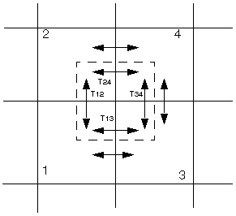
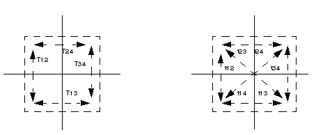

The NINEPOIN keyword in the RUNSPEC section activates a nine-point scheme based on adding diagonal transmissibilities in the areal (XY) direction in order to reduce grid orientation effects when the flow is not aligned with the grid. Additional non-neighbor connections are added between diagonal neighbors. The flows between each cell and its eight neighboring cells (in the areal dimension) are each computed using a two-point approximation to the pressure gradient. The scheme is a modified version of that given in Yanosik and McCracken (1979) . The standard five-point transmissibilities are first obtained from data entered in the GRID and EDIT sections, and these are then modified to obtain the nine-point transmissibilities.
Deriving the nine-point scheme starts by splitting each transmissibility in the usual five-point scheme into two half-transmissibilities:

Considering just the transmissibility values ( ), replace these by the equivalent system ( ). This introduces a diagonal coupling between cells 1 and 4 and cells 2 and 3.

The values of ( ) must preserve the total x and y transmissibilities for the pattern, so that
Tensor effects must be avoided, so that a pressure gradient in the x-direction does not produce a flow in the y-direction. This implies
A choice for may now be made. This should not be so large that one of the other transmissibility values is forced to be negative. Following Shiralkar and Stephenson (1991) , use
The total x and y transmissibility conditions above then define the values of the combinations and , for example
Finally, the ratio of and is chosen to be the same as the ratio of the original values and ,
A similar relation defines and . This then defines all the new transmissibilities. This is repeated for each quadrant of active cells. The result is a set of nine-point transmissibilities that preserves the original total x- and y-direction flows but allows diagonal coupling between cells.
Within the code, the transmissibilities that fall outside the normal pattern are stored as non-neighbor connections. There is an extra cost associated with these terms, and the nine-point option is best used only for injection of highly adverse mobility fluids where the grid orientation effect can be a problem.
The option is invoked by using the NINEPOIN keyword in the RUNSPEC section. The nine-point transmissibilities will then by default be calculated across the entire grid. In ECLIPSE 100, by using the NINENUM keyword in the GRID section, you can choose to apply the scheme only in nominated regions of the reservoir. Note that the NINENUM keyword is not compatible with the Local Grid Refinement option.
It should be noted that the NINEPOIN option is specifically designed to account for grid orientation effects only and is not designed to deal with discretization errors arising from grid non-orthogonality.
This nine-point scheme based on diagonal NNC transmissibilities is invoked in the RUNSPEC section, as follows:
RUNSPEC
..
NINEPOINThe run time will be increased due to the large number of additional NNCs created between diagonal neighbors.
The nine-point transmissibilities can be obtained from the 'TRANX', 'TRANY', 'TRANZ' and 'ALLNNC' switches in the RPTGRID keyword.
It is possible to apply the NINEPOIN scheme only in the XZ or YZ planes with the NINEXZ and NINEYZ keywords.